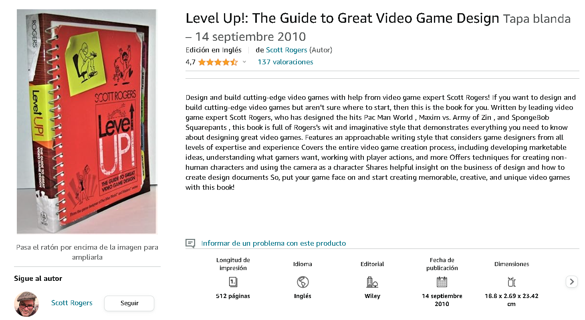
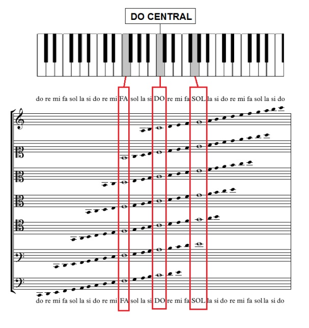

Dissenyant Intel·ligència Artificial
LEVEL 15: Algunes notes sobre la música de Scott Rogers
Música en els videojocs
La música als videojocs és un component fonamental que contribueix significativament a l'experiència del jugador. Al llarg de les dècades, la música ha evolucionat des de simples melodies en 8 bits fins a composicions orquestrals complexes i envoltants.
Explicació sobre la música en els videojocs
-
Ambientació i Atmosfera:
La música als videojocs juga un paper crucial en la creació de l'atmosfera i l'ambientació. Pot establir el to del joc, ja sigui per generar tensió, emoció, misteri o calma. La elecció d'instruments i estils musicals pot influir en la percepció del món del joc..
-
Adaptabilitat i Interactivitat:
A diferència d'altres mitjans, la música als videojocs sovint ha d'adaptar-se a les accions i decisions del jugador. Els sistemes de música interactiva permeten canvis dinàmics a la banda sonora segons la situació del joc. Per exemple, la música pot tornar-se més intensa durant una batalla o més tranquil·la durant moments d'exploració.
-
Identitat Temàtica:
Molts videojocs tenen temes musicals reconeixibles que s'associen directament amb personatges, llocs o situacions específiques. Aquests leitmotivs ajuden a reforçar la connexió emocional del jugador amb la història i els personatges.
-
Avenços Tecnològics:
A mesura que la tecnologia ha avançat, la qualitat de la música als videojocs ha millorat significativament. Els primers videojocs utilitzaven sintetitzadors simples a causa de limitacions tècniques, però ara les bandes sonores poden ser enregistrades amb orquestres en viu o utilitzar tecnologies avançades de síntesi per aconseguir efectes més realistes.
-
Compositors i Col·laboracions:
Al llarg dels anys, la música als videojocs ha estat creada per compositors talentosos que han contribuït de manera significativa al mitjà. Alguns noms destacats inclouen Nobuo Uematsu (Final Fantasy), Koji Kondo (Super Mario Bros., The Legend of Zelda) i Jesper Kyd (Assassin's Creed). A més, hi ha hagut col·laboracions notables entre compositors de renom i estudis de desenvolupament de videojocs.
-
Concerts i Esdeveniments en Viu:
La popularitat de la música de videojocs ha portat a la realització de concerts en viu i esdeveniments on s'interpreten les bandes sonores amb orquestres completes. Aquests concerts, com la sèrie "Video Games Live", han demostrat la rellevància i l'apreciació de la música de videojocs en la cultura popular.
Indústria musicals en els jocs
La indústria musical en els videojocs ha experimentat un creixement significatiu i s'ha convertit en un component clau de la indústria de l'entreteniment en general.
-
Oportunitats per a Artistes i Compositors:
La indústria dels videojocs proporciona oportunitats úniques per a artistes i compositors. Els compositors de música per a videojocs poden contribuir a la creació de bandes sonores immersives i memorables, mentre que els artistes poden veure les seves cançons incloses en jocs, ampliant així la seva exposició a noves audiències.
-
Bandes Sonores Originals (BSO):
La demanda de bandes sonores originals de alta qualitat ha portat a la creació de col·laboracions entre compositors reconeguts i orquestres per produir música de videojocs a nivell d'estudi. Algunes bandes sonores es llancen comercialment i es converteixen en èxits de vendes independents.
-
Integració de Música Llicenciada:
A més de la música composta específicament per als videojocs, molts jocs incorporen pistes de música llicenciada d'artistes existents. Això pot incloure cançons populars de diversos gèneres, afegint varietat a l'experiència del jugador i sovint s'utilitza per realçar moments clau en la narrativa del joc.
-
Col·laboracions Exclusives:
Alguns videojocs han optat per col·laborar amb artistes famosos per crear cançons exclusives que es llancen juntament amb el joc. Aquestes col·laboracions poden ser beneficioses tant per als artistes com per als desenvolupadors de jocs, ja que generen interès i publicitat addicional.
-
Esdeveniments en el Joc:
Alguns jocs han introduït esdeveniments en el joc que presenten actuacions en viu d'artistes o bandes. Aquests esdeveniments, que poden tenir lloc dins del propi joc, han demostrat ser populars entre els jugadors i ofereixen una forma innovadora de fusionar la música i els videojocs.
-
Plataformes de Transmissió en Viu:
La transmissió en viu de videojocs i música en plataformes com Twitch ha creat noves oportunitats perquè els artistes es connectin amb els seus fans. Alguns músics fins i tot han realitzat concerts en línia dins de jocs populars, ampliant encara més la convergència entre la música i els videojocs.
-
Monetització i Drets d'Autor:
La indústria musical en els videojocs també ha plantejat reptes en termes de monetització i drets d'autor. La gestió adequada dels drets d'autor és essencial, especialment quan es tracta de música llicenciada i col·laboracions exclusives.
Efectes de So
Els efectes de so en els videojocs juguen un paper essencial per millorar l'experiència del jugador i afegir una capa addicional d'immersió en el món virtual.
Explicació dels efectos de So dels videojocs
-
Realisme i Immersió:
Els efectes de so contribueixen significativament a la sensació de realisme i a la immersió en el món del joc. Són essencials per crear un ambient coherent i convincent, ja que proporcionen pistes auditives sobre el que està passant a l'entorn virtual.
-
Feedback i Resposta:
Els efectes de so s'utilitzen per proporcionar feedback immediat al jugador sobre les seves accions. Sigui el so d'una porta que s'obre, el clic d'una arma o el zumbit d'un assoliment desbloquejat, aquests sons ajuden el jugador a comprendre i avaluar les seves accions.
-
Creació d'Ambient:
Els efectes de so són fonamentals per establir el to i l'ambient del joc. Des del cruixit de les fulles en un bosc fins al xiuxiueig del vent en una muntanya, aquests sons contribueixen a la creació d'entorns cohesionats i emocionants.
-
Col·laboracions Exclusives:
Alguns videojocs han optat per col·laborar amb artistes famosos per crear cançons exclusives que es llancen juntament amb el joc. Aquestes col·laboracions poden ser beneficioses tant per als artistes com per als desenvolupadors de jocs, ja que generen interès i publicitat addicional.
-
Narrativa Acústica:
Com la música, els efectes de so poden explicar una història per ells mateixos. Els sons ambientals, com el xisclejar d'una porta oxidada o el retumbar d'un tro de llamp llunyà, poden afegir elements narratius sense necessitat de diàleg.
-
Disseny de So Direccional:
La capacitat de percebre la direcció i la distància dels sons és crucial en molts videojocs, especialment en aquells amb aspectes multijugador o d'agilitat. Els efectes de so direccionals contribueixen a la consciència espacial del jugador i poden ser vitals per a l'estratègia i la presa de decisions.
-
Canvi Dinàmic:
Com la música, els efectes de so poden canviar dinàmicament segons la situació del joc. Poden intensificar-se durant moments d'acció, fer-se més subtils durant escenes d'exploració o modificar el seu to per reflectir canvis en l'estat del jugador.
-
Personalització i Identitat:
També s'utilitzen els efectes de so per donar una identitat única al joc. Elements sonors distintius poden esdevenir part integral de la marca del joc i ser reconeixibles pels jugadors, fins i tot fora del context del joc.
-
Tecnologia de So Avançada:
Amb els avenços tecnològics, els videojocs han adoptat tecnologies de so més avançades, com el so envoltant i l'àudio 3D. Aquestes tecnologies proporcionen una experiència auditiva més immersiva, permetent als jugadors submergir-se encara més en el món del joc.
Cercles harmònics (Extra)
Els cercles harmònics són eines fonamentals en la teoria musical que representen les relacions entre els acords dins d'una tonalitat específica. Tot i que en la música clàssica i tradicional s'utilitzen principalment en contextos majors i menors, en els videojocs, l'harmonia pot variar segons l'estil del joc i l'atmosfera que es vulgui crear.
Els cercles harmònics més utilitzats
-
Cercles harmònics en Do Major:
- I (C): Do - Mi - Sol
- IV (F): Fa - La - Do
- V (G): Sol - Si - Re
- VI (Am): La - Do - Mi
- II (Dm): Re - Fa - La
- III (Em): Mi - Sol - Si
- VII° (Bdim): Si - Re - Fa
-
Cercles harmònics en La Menor:
- I (Am): La - Do - Mi
- IV (Dm): Re - Fa - La
- V (E): Mi - Sol - Si
- VII (G): Sol - Si - Re
- II° (Bdim): Si - Re - Fa
- III (C): Do - Mi - Sol
- VI (F): Fa - La - Do
És important assenyalar que l'harmonia en els videojocs pot ser més flexible i experimental en comparació amb la música més tradicional. Els compositors sovint incorporen elements de diverses tradicions musicals, i la elecció d'acords depèn en gran part de l'estat d'ànim que es vol aconseguir en una escena o situació determinada del joc. La capacitat per modular i canviar ràpidament entre tonalitats també és una tècnica comuna utilitzada per crear moments dramàtics o emocionants a la música dels videojocs.
Annex (Extra)
Aquí hi han algunes melodies d'alguns videojocs:
- Mario Bros:
- Pacman: